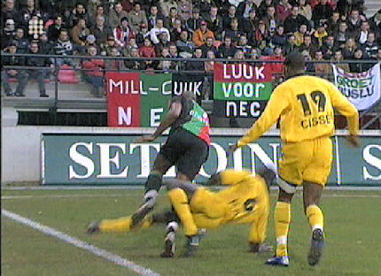

|
NEC
- Roda JC (0-3) 12 april 2006
|
Babos treuzelt erg lang met uittrappen. Zo lang dat Cristiano besluit op
avontuur uit te gaan.
Cristiano maakt één, misschien twee keer hands maar mag dit buitenkansje
van scheidrechter Jol tot doelpunt promoveren: 0-1, (9'). De protesten van
Babos ten spijt.

Aanslag van Kah op Denneboom levert geel op.
Jol zag de handsballen vandaag over het hoofd. Heel soms zit het mee...
Tweede overtreding Kah. Het zit weer mee; geel noch rood.
Na een misverstand in de NEC-defensie kan Cristiano beheerst zijn tweede
doelpunt binnenschuiven: 0-2, (66').
Een woensdagavond, 200 stadionverboden en toch nog een goed gevuld
uitvak. Roda niet kapot te krijgen!
Nuttige overtreding Vicelich. Jol is wederom clement.
Via Cziommer en nog iemand wordt Cissé bereikt die de bal in de linker
hoek schiet: 0-3: (94').
Scheissbube steekt een feestsigaar op.
Hoe lang swingt Cziommer nog bij Roda??? De play-offs zijn bijna binnen. In de
afsluitende wedstrijd tegen Heracles,
mag het niet meer mis gaan. Heracles is veilig en heeft zijn feestje al gehad
na de 4-2 thuiszege op NAC.
© Koempels Pleasure Dome
|